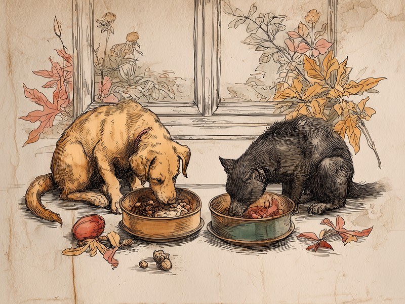
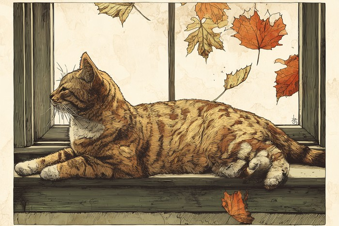

気温が下がるにつれて体が熱をつくろうとする、犬や猫に備わった季節性の代謝サイクルが関わっています。「食欲の秋」は気のせいではなく、体の仕組みなのです。 Autumn appetite isn't just a mood. It's the body getting ready for the cold.
猫の食欲には「季節の波」がある
猫の食欲は夏に落ち込み、秋から冬に向けて高まるという、およそ3〜4か月周期の波を繰り返すと言われています。これは複数の獣医師が指摘していることで、一年を通じて決まった上がり下がりがあるわけです。夏に「食が細くなったかな」と心配していたのに、秋になるとお皿があっという間に空になる。飼い主さんが感じるその変化は、気まぐれではなく、猫の体に組み込まれた季節のリズムのあらわれなのですね。
出典: Serisier, S. et al. "Seasonal Variation in the Voluntary Food Intake of Domesticated Cats (Felis Catus)" PLOS ONE, 2014. journals.plos.org
気温が下がると、体は「燃料」を多く求める
涼しくなると食欲が増すのは、恒温動物である犬や猫が体温を保つために、より多くのエネルギーを必要とするからだと考えられています。獣医師たちが挙げるこの理由を、もう少し詳しく見てみましょう。犬や猫は、自分の体で熱をつくり出して体温を一定に保つ「恒温動物」です。気温が下がるほど、脂肪を燃やして熱をつくる必要が増していきます。その燃料を補うために、体は自然と「もっと食べたい」という状態になるのです。これは、これから訪れる寒い季節に向けて体を整えておく、ごく自然な反応だと考えられています。秋の食欲は、体が冬支度を始めた合図と言えるかもしれません。
「太陽の暦」ではなく「気温」に反応する仕組み
秋の食欲増進は、日の長さを読む恋の季節とは違い、気温の低下そのものに体が直接反応する、代謝の側の仕組みなのです。このサイトで紹介してきた猫の恋の季節は、日の長さの変化を体内のホルモンが読み取ることで始まる、光をきっかけにした仕組みでした。太陽の暦を読んで動くのが恋の季節、肌で感じる寒さに応じて動くのが食欲の季節。同じ秋のできごとでも、体はまったく別のルートで季節を感じ取っているのです。

「食欲の秋」は、いつまで続く?
目安としては、秋から真冬にかけて食欲の高い状態が続き、春に向けて気温が上がるとしだいに落ち着いていくとされています。前述のとおり、この波はおよそ3〜4か月の周期で繰り返されるものです。ただし実際の始まり・終わりの時期は、住んでいる地域の気候や室内飼いか外に出る機会があるかなど、その子の生活環境によって前後します。「去年の今ごろよりよく食べる」「まだ食欲の秋が続いている」といった変化に気づいたときは、本サイトの体重換算ツールなどで定期的に体重を記録しておくと、季節による自然な変化なのか、それ以外の理由による変化なのかを見分ける手がかりになります。
野生の動物にとって、秋にたっぷり食べて脂肪をたくわえるのは、厳しい冬を生き抜くための大切な備えでした。ところが、暖かい家の中で暮らす犬や猫には、冬を越すための脂肪の貯金はほとんど必要ありません。それでも「寒くなる前に食べておこう」という昔ながらの本能は残っているため、秋はつい食べ過ぎて体重が増えやすい季節でもあるのです。